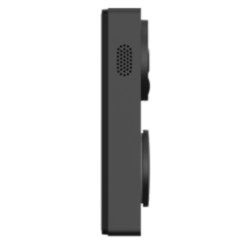
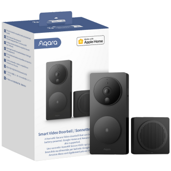

Presence Sensor FP2
- The Presence Sensor FP2 features zone positioning that can define different zones within a room, for example the setting of different zones, such as a bed or desk area, each with individualized automations, ensuring a tailored and rich smart home experience.
Zone Positioning |
Multi-Person |
Ultra-High Precision |
Apple Home and Other Ecosystem Support |
Built0in Light sensor |

Product Info
Description
The Aqara Presence Sensor FP2 is an advanced motion and presence detection device designed for smart home environments. Equipped with millimetre-wave radar technology, it provides highly accurate and precise monitoring, detecting even subtle movements within its range. The sensor can differentiate between human presence and other motion, offering enhanced reliability in applications such as lighting control, security systems, and automation. It features a wide detection range and can be integrated with other Aqara smart home products via the Aqara Hub, supporting automation and remote control through the Aqara Home app. The FP2 is ideal for use in rooms, corridors, and entrances, enhancing the efficiency and intelligence of smart home setups.
Key Features
- Zone Positioning: Monitors rooms up to 430 sq. ft (40 m²) and divides them into up to 30 zones (e.g., sofa, bed, desk) for customized automation.
- Multi-person Detection: Detects up to 5 people simultaneously, enabling automatic responses based on individual positions without interference.
- Ultra-High Precision: Uses radar technology for stable, non-invasive detection, ensuring privacy and accuracy even while sitting or sleeping.
- Smart Home Integration: Easily integrates with HomeKit, Alexa, and Google Home, no hub required, expanding your smart home setup.
- Fall Detection & Alerts: Detects falls within a 2-meter radius with over 98% accuracy and sends alerts without the need for wearable devices.
- Built-in Light Sensor: Enhances lighting automation, providing flexible, darkness-based home control.
- Local Automation & Flexible Installation: Runs locally without Wi-Fi, ensuring automation continues during network instability, with multiple installation options.
- IPX5 & Hidden USB-C Port: Waterproof for wet areas like bathrooms and offers flexible placement with an easily swappable USB-C cable.
Specifications
| Category | Hub |
| Colour | White |
| Model | PS-S02D |
| Wireless Protocol | Wi-Fi IEEE 802.11 b/g/n 2.4 GHz, Bluetooth 4.2 |
| Wi-Fi Operation Frequency | 2412-2472 MHz |
| Wi-Fi Maximum Output Power | ≤ 20 dBm |
| Bluetooth Operation Frequency | 2402-2480 MHz |
| Bluetooth Maximum Output Power | ≤ 13 dBm |
| Radar Operation Frequency | 60-64 GHz |
| Dimensions | 64 × 64 × 29.5 mm (2.52 × 2.52 × 1.16 in.) |
| Recognition Range: | Wall mounting:8 meters in the radial direction, with a horizontal angle of 120°, tracking up to 5 targets |
| Ceiling mounting | A circle with a radius of 2 meters, the accuracy of fall detection>98% |
| Operating Temperature | -10°C ~ 40°C |
| Operating Humidity | 0~95% RH，non-condensing |
| Protection Rating | IPX5 |
| Ports | USB-C |
| Power Supply | DC 5V 1A |
| What's in the Box | PS-S02D: Presence Sensor FP2 × 1, User Manual × 1, USB-C to USB-A Cable × 1, Metal Plate × 2, Sticker ×2, Screw Kit × 1 |
Gallery
 |
 |  |
| Front Image | Side Image | Product Box |
Automations and Complementary Products
Lean Away Mode Without Delays:
When the Presence Sensors detect no one in the rooms, the lights, air conditioning, and alert system will automatically turn off. This saves energy and enhances security without the need to manually activate Away Mode.
| Required Automation Products: |  Presence Sensor FP2 |
 Hub M3 |
 Ceiling Light T1M |
Wake-Up Automation That Doesn’t Disturb:
If someone enters the bathroom while presence is still detected in the bed zone, the shades won’t open, ensuring the automation doesn’t disturb other people in the room.
| Required Automation Products: | Presence Sensor FP2 |
Hub M3 |
 Curtain Driver E1 |
Accent Lighting That Follows You:
When presence is detected on the desktop, the lights nearby will turn on, and other lights will turn off as you move. This creates a dynamic lighting experience based on your location.
| Required Automation Products: | Presence Sensor FP2 |
Hub M3 |
 LED Strip T1 |
4. Detect Presence and Start Home Security:
If presence is detected in the living room, the Aqara Camera G3 will automatically turn on to monitor the area, providing real-time surveillance.
| Required Automation Products: | Presence Sensor FP2 |
 Camera Hub G3 |
Product Support Documents
- Step by step installation instruction video (runtime 00:10:32): Installation Video
- Product User Manual (format PDF): User Manual
- Product FAQs (format PDF): Frequently Asked Questions